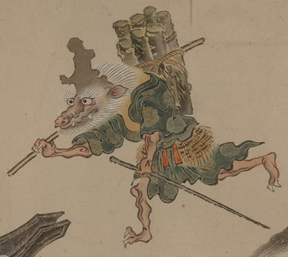

龍のような顔の化物。ひげと髪の毛がたてがみのように頭部を取り囲んでいる。額が上に向けてでこぼこした形に突き出ており、鉈か斧などが変形したものとも考えられる。薪をくくりつけた棒を右肩に背負い、左手には杖のような棒を持って走っている。緑色の着物をまとい、腰には腰蓑を巻いている。
出典：親書誌：U426_nichibunken_0154：妖怪絵巻；ヨウカイエマキ／日付：2010／資源識別子：U426_nichibunken_0154_0013_0000
Copyright (c)2010- International Research Center for Japanese Studies, Kyoto, Japan. All rights reserved.